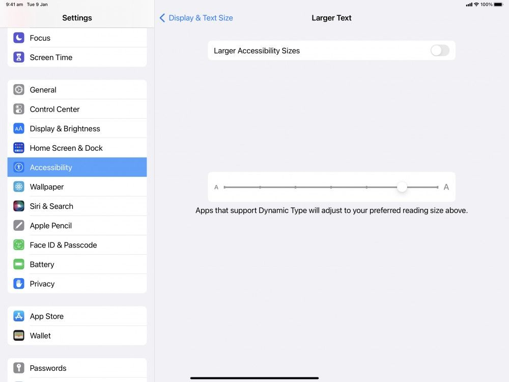
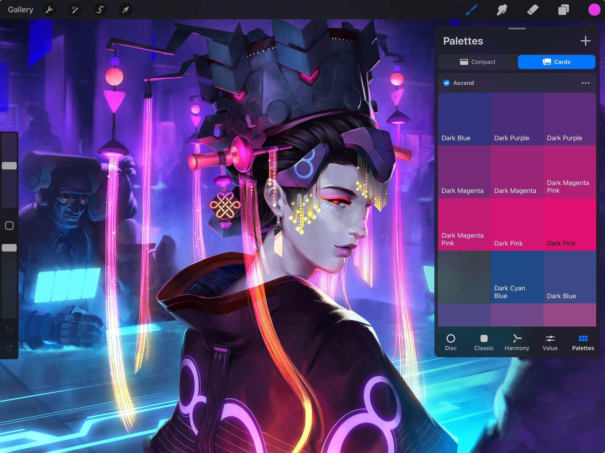
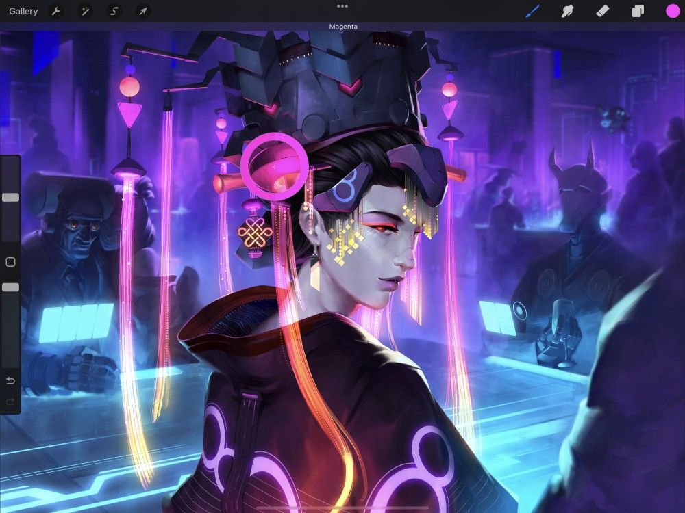

📖 Đã dịch sang tiếng Việt. Thuật ngữ chuyên môn giữ tiếng Anh — rê chuột để xem nghĩa (tooltip).
Accessibility
Procreate có các tính năng trợ năng giúp nghệ thuật số dễ tiếp cận hơn với tất cả mọi người.
Các tính năng Trợ năng
Sử dụng các tính năng sau để khai thác tối đa Procreate nếu bạn gặp hạn chế về vận động tay hoặc thị lực.
Pro Tip
Some accessibility features might suit your work flow even if you don't usually have them enabled on your iPad. Try experimenting and you may find you prefer to leave certain features active.
Cử chỉ Chạm Đơn
Dùng một ngón tay để hoàn tác, làm lại, phóng to, di chuyển và xoay khung vẽ, cũng như khớp khung vẽ vào màn hình, tất cả thông qua Single Touch Gestures Companion (tiện ích cử chỉ chạm đơn).
Single Touch Gestures Companion là một cửa sổ tiện ích nhỏ nổi phía trên khung vẽ khi được bật qua phần cài đặt của Procreate.

Để biết cách bật Single Touch Gestures Companion và dùng tất cả cử chỉ chạm đơn, hãy xem Gestures (cử chỉ) trong phần Interface & Gestures của Cẩm nang này.
VoiceOver
VoiceOver giúp người khiếm thị sử dụng iPad hiệu quả hơn rất nhiều. Mỗi lần bạn chạm vào iPad, VoiceOver sẽ đọc lên nội dung bạn vừa chạm để điều hướng, đọc menu, v.v.
Procreate hỗ trợ VoiceOver thông qua iPadOS. Để truy cập VoiceOver, vào Settings (cài đặt) iPadOS > Accessibility (trợ năng) và bật VoiceOver.
Heads Up
You cannot draw while VoiceOver is active. You can set up a shortcut to quickly turn VoiceOver on and off. This will avoid needing to constantly return to global iPadOS Settings.
Thiết lập lối tắt VoiceOver bằng cách vào Settings iPadOS > Accessibility > Accessibility Shortcut (phím tắt trợ năng) rồi chọn VoiceOver.
Bấm nhanh ba lần nút nguồn hoặc nút Home để bật hoặc tắt VoiceOver.
Bạn có thể đã thiết lập nhiều hơn một Accessibility Shortcut. Khi đó, bấm ba lần nút nguồn hoặc Home sẽ mở bảng Accessibility Shortcuts. Chạm VoiceOver trong menu Accessibility Shortcuts để bật hoặc tắt VoiceOver.
Chữ Trợ năng Lớn hơn
Procreate hỗ trợ Dynamic Type (cỡ chữ động) cho người khiếm thị thông qua iPadOS.
Cài đặt Trợ năng
Bạn có thể điều chỉnh cỡ Dynamic Type trong phần Accessibility của Settings iPadOS.
Chạm Settings iPadOS → Accessibility → Display & Text Sizes (kích thước hiển thị & chữ) → Larger Text (chữ lớn hơn). Sau đó bật Larger Accessibility Sizes (cỡ chữ trợ năng lớn hơn). Dùng thanh trượt cỡ chữ để chọn kích thước ưa thích.
Các ứng dụng hỗ trợ Dynamic Type giờ đây sẽ hiển thị cỡ chữ ưa thích của bạn trong menu.

Pro Tip
Setting your Dynamic Type to 66% or higher can display smaller buttons in an easy-to-read pop-up panel. Tap and hold any small button not in the top navigation to invoke a large pop-up displaying that button’s icon and name.
Thẻ Màu
Color Cards hiển thị các mẫu màu lớn hơn trong Palettes (bảng màu). Chúng cũng hiện tên màu trên mẫu. Cards có thể giúp người khiếm thị và người mù màu dùng màu dễ dàng hơn trong Procreate.

Giải thích đầy đủ về cách Cards hoạt động có trong phần Palettes của mục Color (màu sắc) trong Cẩm nang này.
Thông báo Mô tả Màu
Color Description Notifications hiển thị tên của Active Color (màu đang dùng) mỗi khi nó thay đổi. Điều này giúp người mù màu nhận diện các sắc độ và màu sắc tốt hơn.
Tên của Active Color hiển thị ở đầu màn hình khi bạn dùng Eyedropper (ống hút màu) hoặc chọn Swatch (mẫu màu) mới trong Palettes.
Để bật Color Description Notifications, vào Settings iPadOS → Procreate và bật Color Description Notifications.


Âm thanh Phản hồi
Feedback sounds là các âm thanh cảnh báo phát ra khi bạn thực hiện một số thao tác nhất định. Chúng có thể báo cho người khiếm thị biết khi một thao tác trong Procreate được nhập đúng hoặc sai.
Để bật Feedback sounds, vào Settings iPadOS → Procreate và bật Feedback sounds.
Hỗ trợ Chạm - Initial Touch Location Support
Initial Touch Location Support là một tính năng trợ năng của iPad trong phần cài đặt Accessibility của iPadOS. Được thiết kế cho người bị run tay, nó xác định lần chạm đầu tiên là lần iPad phản hồi, bỏ qua các lần chạm tiếp theo sau lần chạm đầu tiên.
Nếu bạn cần Initial Touch Location Support để dùng iPad, bạn cũng phải bật Tap Assistance - Initial Touch Location Support trong cài đặt Procreate trên iPad để dùng tính năng này trong Procreate.
Để làm việc này, vào Settings iPadOS → Procreate và bật Tap Assistance - Initial Touch Location Support.
Ổn định Nét vẽ
Stabilization làm mượt các nét vẽ khi bạn vẽ chúng, giúp các đường vẽ tay thẳng hơn so với tự nhiên. Với người bị run tay hoặc tay không ổn định, tăng các cài đặt này có thể giúp tạo nét vẽ mượt mà và chủ động hơn.
Stabilization trong Procreate có thể áp dụng toàn cục, hoặc cho từng cọ riêng. Cài đặt toàn cục phù hợp nhất nếu bạn cần ổn định nét vẽ liên tục.
Cài đặt Ổn định Toàn cục
Cài đặt toàn cục cho Stabilization nằm trong bảng Pressure and Smoothing (áp lực & làm mượt). Để truy cập, chạm Actions (hành động) → Preferences (tùy chỉnh) → Pressure & Smoothing.
Procreate có Stabilization thông thường và một phiên bản nâng cao hơn gọi là Motion Filtering.
Stabilization (Ổn định)
Stabilization lấy trung bình động của một nét vẽ và vẽ giá trị đó lên khung vẽ. Stabilization càng cao thì càng làm phẳng các độ rung trong nét vẽ, giúp nét vẽ cố ý mượt mà và thẳng hơn.
Dùng thanh trượt để chọn phần trăm Stabilization bạn muốn.
Stabilization còn phụ thuộc vào tốc độ nét vẽ. Bạn vẽ càng nhanh, nó càng cố làm mượt nét vẽ.
Heads Up
Stabilization can be useful for artists of all abilities. At lower levels it can help smooth the stokes of even the steadiest hand.
Mức Motion Filtering
Motion Filtering là một cách tiếp cận mới về ổn định, dùng các thuật toán nâng cao hơn. Nó được thiết kế riêng với mục tiêu hỗ trợ run tay và trợ năng.
Stabilization làm phẳng độ rung của nét vẽ bằng cách ép chúng về đường trung tâm. Còn Motion Filtering xóa hoàn toàn phần ngoại biên của độ rung mà không ép lại.
Dùng thanh trượt để chọn phần trăm Motion Filtering bạn muốn.
Điều này cho phép nét vẽ mượt mà và thẳng hơn bất kể tốc độ vẽ. Nó cũng có nghĩa là run tay sẽ thể hiện ít hơn khi vẽ một nét trên khung vẽ.
Motion Filtering Expression
Motion Filtering Expression chỉ hoạt động khi Motion Filtering đang bật. Trong khi Motion Filtering giúp loại độ rung của nét vẽ, nó cũng có thể làm nét quá thẳng và quá mượt.
Motion Filtering Expression trả lại một phần cảm giác diễn đạt cho nét vẽ.
Dùng thanh trượt để chọn phần trăm Motion Filtering Expression bạn muốn.
Heads Up
The higher Motion Filtering is set, the less effect Motion Filter Expression can have on a stroke.
Tip Attachment
Tip Attachment hoạt động cùng với Motion Filtering và xác định điểm bắt đầu của nét vẽ.
Tip Attachment mặc định được bật, tuy nhiên bạn có thể dùng công tắc để bật hoặc tắt. Khi Tip Attachment bật, các nét vẽ bắt đầu và tiếp tục tại vị trí mũi nét bắt đầu và di chuyển trên khung vẽ.
Khi tắt Tip Attachment, điểm bắt đầu nét vẽ được xác định bằng cách xem nhiều điểm bắt đầu và lấy trung bình giữa chúng. Điều này có thể hữu ích cho các họa sĩ bị run tay, những người không thể kiểm soát chính xác nơi đặt điểm bắt đầu nét vẽ.
Pro Tip
You may want or need a combination of all the Stabilization features above to achieve the best ‘feel’ for you. Try testing combinations out on a blank canvas. Try different percentages and speeds to get a good feel for what works. This will help you figure out how much stroke stabilization you like, or need when working.
Cài đặt Ổn định Cọ
Nếu bạn không cần ổn định nét vẽ toàn cục, các cài đặt này cũng có thể gán cho từng cọ riêng.
Để biết cách thiết lập ổn định nét vẽ cho cọ, hãy xem Stabilization trong phần Brush Studio Settings của Cẩm nang này.
Still have questions?
If you didn't find what you're looking for, explore our video resources on YouTube or contact us directly. We’re always happy to help.